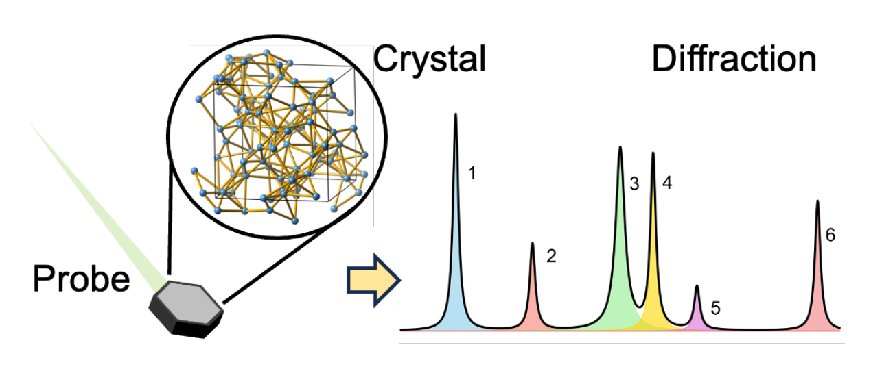
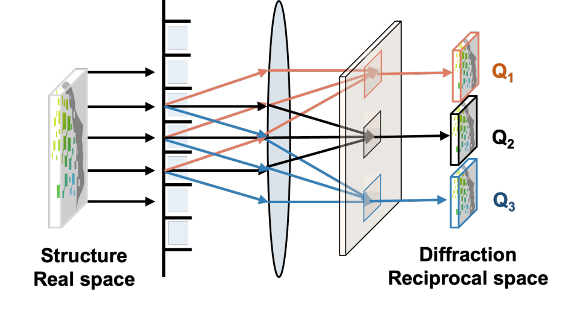
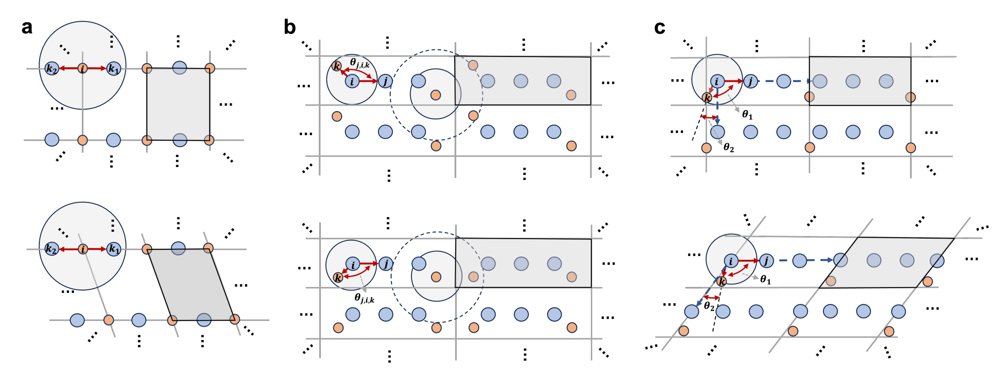
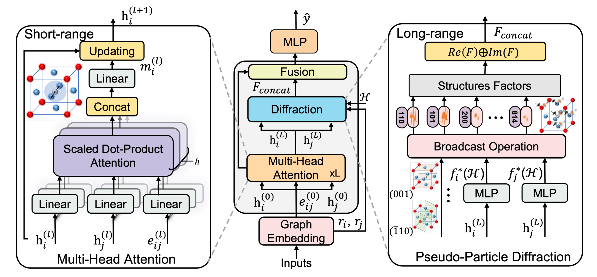
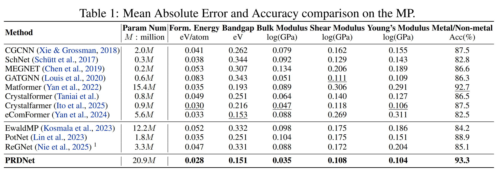

01 / GRAPH
Short-range context
Multi-head attention learns expressive local messages from atomic graphs and edge features.
PRDNet couples graph learning with a learnable pseudo-particle ray-diffraction mechanism, bringing reciprocal-space physics to invariant crystal property prediction.

Crystals with similar local atomic environments can have distinct periodic structures. PRDNet explicitly models their long-range information in reciprocal space while retaining symmetry invariance.
Multi-head attention learns expressive local messages from atomic graphs and edge features.
Pseudo-particles generate learnable diffraction factors that encode periodic, global interactions.
Real- and reciprocal-space features are fused for accurate crystal property prediction.
The model projects graph embeddings into a diffraction representation, then combines structural factors with local graph features.

PRDNet transforms real-space structure features into reciprocal-space diffraction channels. This gives the network a direct path to model global periodicity rather than relying exclusively on repeated local message passing.
The method respects crystallographic symmetry while connecting short-range multi-head attention with long-range pseudo-particle diffraction. The resulting representations distinguish structures beyond their immediate neighborhoods.


Graph embedding feeds the attention backbone and diffraction module. Their fused features are passed to the final predictor, combining local chemistry with long-range structural evidence.
On the benchmark shown below, PRDNet achieves the best reported values across formation energy, band gap, elastic properties, and metal/non-metal classification.

Install PRDNet, prepare an ASE-compatible database, and start training.
Get started on GitHub ↗